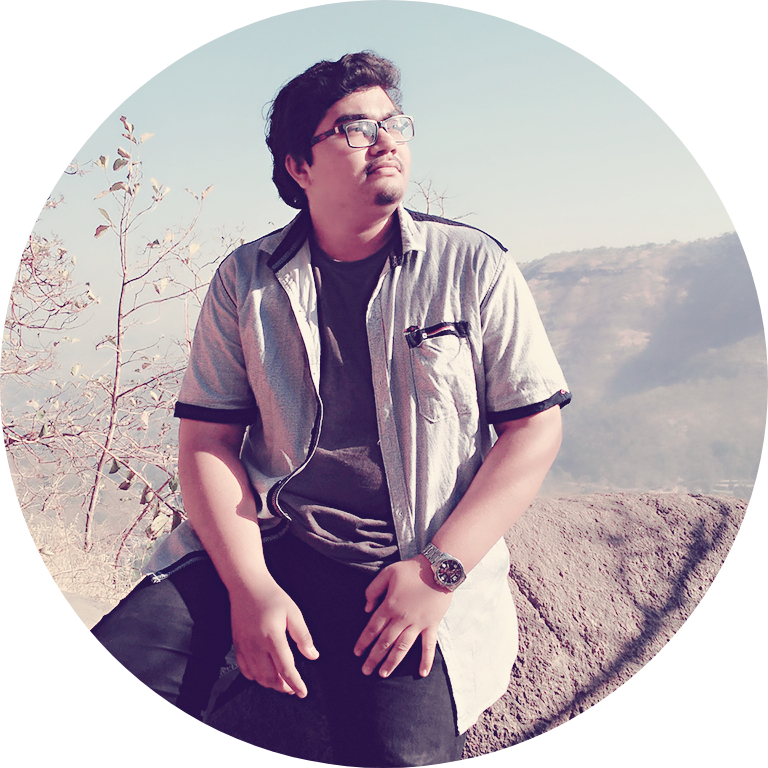

|  |
Viraj Rajendra DondalStudent at Undergraduate level I am in the last semister of my UG degree. I love watching anime and reading manga. |
To work with the company, belonging to professionally managed group, that is offering enough opportunities for career advancement and professional growth of an individual.
|
|
| Project title | “Design of Test rig for testing of Spindles.". |
| Project Description | ATB Industrial Corporation is a Mechanical Design and service providers of Pharmaceutical machinery, submersible pumps in India. ATB Industrial corporation is a rapidly growing company, which was established in 2015. The Moto is to Design a test rig to test spindles of various diameters for parameters such as vibrations and temperature etc. |